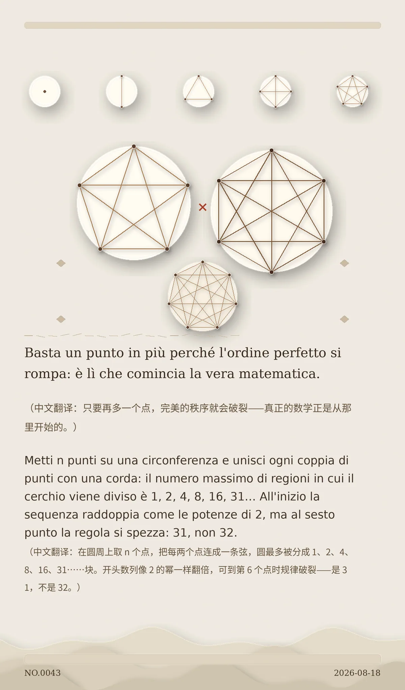

Basta un punto in più perché l'ordine perfetto si rompa: è lì che comincia la vera matematica. （中文翻译：只要再多一个点，完美的秩序就会破裂——真正的数学正是从那里开始的。）
Metti n punti su una circonferenza e unisci ogni coppia di punti con una corda: il numero massimo di regioni in cui il cerchio viene diviso è 1, 2, 4, 8, 16, 31… All'inizio la sequenza raddoppia come le potenze di 2, ma al sesto punto la regola si spezza: 31, non 32. （中文翻译：在圆周上取 n 个点，把每两个点连成一条弦，圆最多被分成 1、2、4、8、16、31……块。开头数列像 2 的幂一样翻倍，可到第 6 个点时规律破裂——是 31，不是 32。）